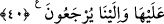

ALLÂH’A DÖNÜŞ
34. İşte hakkında şüphe ettikleri Meryem oğlu İsa; hak söze göre budur.
35. Çocuk edinmek, Allâh’a yakışmaz. O’nun şanı yücedir. O, bir işi yapmak
istediği zaman ona sadece “Ol” der, o da olur.
36. Şüphesiz Allah benim de Rabb’im, sizin de Rabb’inizdir; O’na kulluk edin.
İşte doğru yol budur.
37. Kendi aralarında çıkan hizipler, ayrılığa düştüler. Büyük güne şahit olunduğu
zamanda vay o kâfirlerin haline!
38. Bize geldikleri gün ne güzel işitir, ne güzel görürler! Ama o zâlimler, bugün
apaçık sapıklık içindedirler.
39. Onları şu hasret gününe karşı uyar ki, o zaman kendileri gaflet içinde
inanmamakta ısrar ederlerken iş bitirilmiş olur.
40. Yeryüzüne ve onun üzerindekilere ancak biz vâris oluruz ve onlar ancak bize
döndürülürler.
“İşte” yüksek vasıfları açıklanan “hakkında şüphe ettikleri” ve “İsa Allâh’ın
oğludur” dedikleri kimse “Meryem oğlu İsa; hak” sâbit ve doğru “söze göre budur.”
Onun vasıfları hristiyanların söylediği gibi değildir. Bu âyet, en etkili şekilde ve delil
getirerek hristiyanları Hz. İsa’yı vasfettikleri şey konusunda yalanlamaktadır. Çünkü Hz.
İsa’yı onların vasfettiklerinin zıddı olan özelliklerle vasfetmiş, sonra da (onların
verdiği) hükmü tersine çevirmiştir.